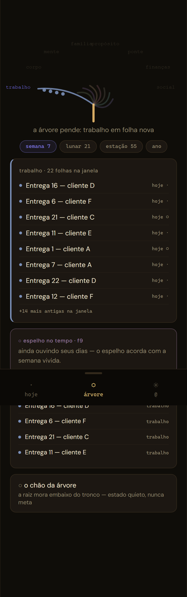
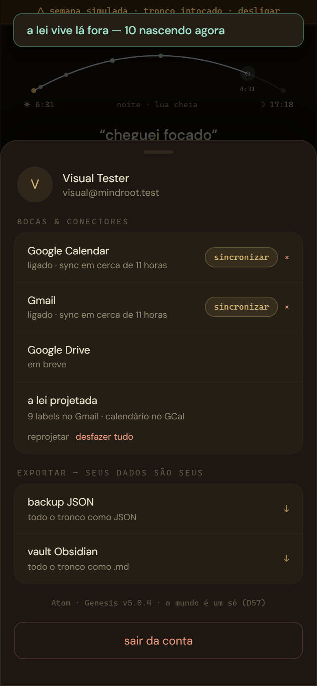
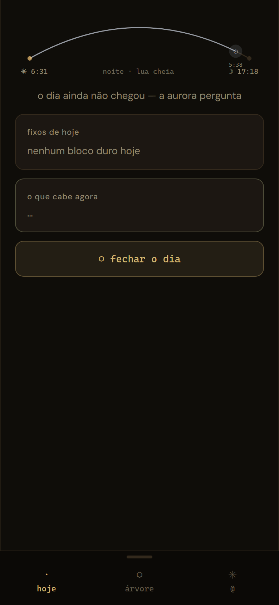
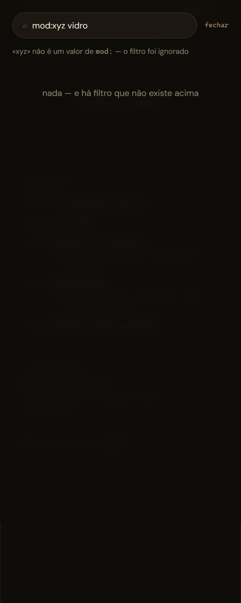
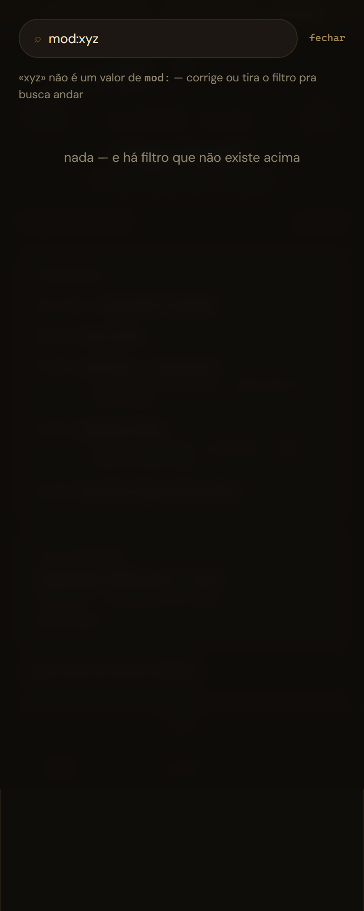
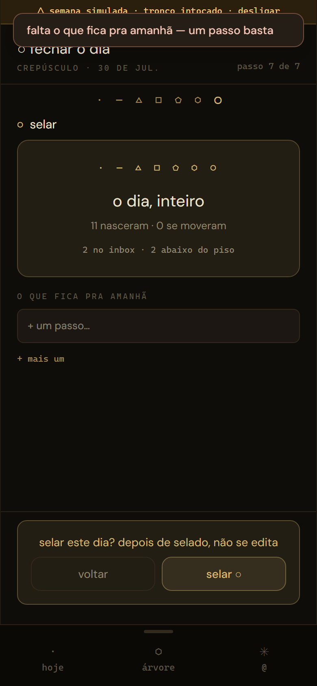
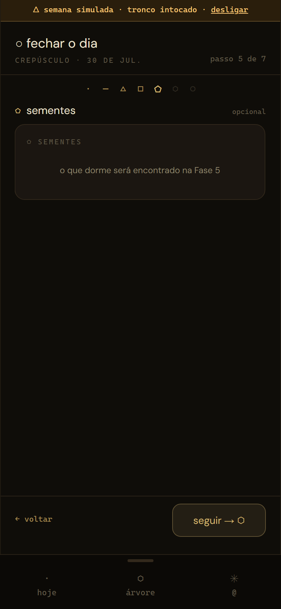
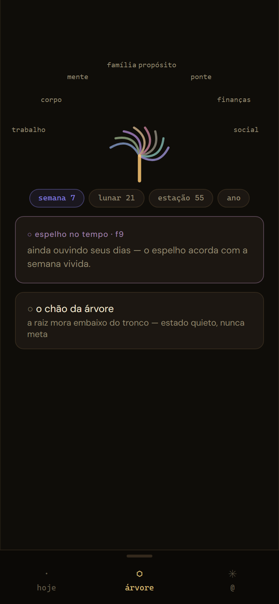
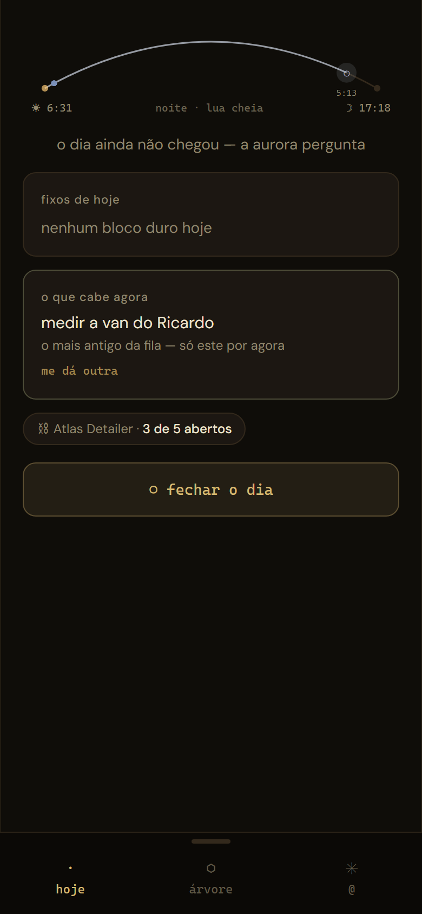

atom · onda 3 · sessão desacompanhada
○ O resumo da noite — pra quem acorda agora
30 Jul 2026, madrugada. O exame das 13 features terminou, três
mentiras foram achadas ao vivo e mortas na mesma noite, duas obras do
benchmark fecharam, e o gate está carregado na mesa — sem disparar. Onze
commits em v2-faces, 392 testes verdes, nada subiu: deploy,
push e merge continuam sendo gesto do Rick.
· Em uma tela
| O quê | Estado |
|---|---|
| Ato VI — dissecações 02 · 03 · 04 | ✓ 10 features vividas, 3 docs, fotos 32–70 |
| As 3 MENTEs achadas ao vivo | ✓ mortas na mesma noite, cada uma com teste |
| Obra 24a — selo do WRAP com dia vazio | ✓ 9b84a9e |
| Obra 24b — cold start + confiança por ramo | ✓ 0521514 |
| Ato VII — o gate carregado | ✓ 19_gate.md · não disparado |
| Hooks | ✓ 392 testes (18 novos) · tsc · build · 12 cenas · visual 13/13 |
— 1 · O exame terminou
Três rodadas no rito da dissecação — viver primeiro, ler código depois, crivo D62 contra os benchmarks. Os vereditos das dez features que faltavam:
| Doc | Features | Vereditos |
|---|---|---|
| 14_dissecacao-02 | ÁRVORE · Raiz/cofre · Builder | viva viva manca |
| 14_dissecacao-03 | casa/conectores · a ida · digest | manca não verificada manca |
| 14_dissecacao-04 | Wrap · busca · projetos · offline | viva viva manca mentia |




△ 2 · As três mentiras — mortas com teste
A tese do rito se confirmou pela terceira vez: o que MENTE só aparece vivendo, nunca lendo.
1 · A volta do cron não conhecia a série
O ingestVolta da edge — o caminho que produz 100% dos
itens reais — ingeria instância de série sem recurring_event_id
e sem herança de selo. A DP-C estava morta em produção: o standup ia pedir
assentimento toda semana, pra sempre, e item nascido pelo cron nem
ensinava selo.
Cirurgia: a edge espelha o contrato do client (nasce no estágio 1,
herda pelo portão); o guarda novo series-espelho.test.ts lê a
edge como texto e quebra se divergir de novo.
⚠ só vale em produção depois do deploy — gesto do Rick · commit b6332bc
2 · O tronco de bolso era código inalcançável
Sem rede, o fetch do supabase pendura sem rejeitar — o catch que leria o snapshot nunca rodava. O HOJE ficava em «…» pra sempre, com o bolso gravado do lado (provado: 1703 bytes no localStorage e a tela em loading).
Cirurgia: comPrazo() corre o fetch contra 6 segundos;
sem resposta, o bolso assume. A cena 10 do atos.spec prova com
rede morta de verdade.
D55: nada se perde — nem a leitura · commit 8312196
3 · A busca dizia «o filtro foi ignorado»
O motor — por desenho certo — trava a busca com filtro inválido (nunca alargar em silêncio). Mas a fala dizia o oposto: o usuário lia «ignorado», esperava os resultados do texto livre, via nada.
Cirurgia: a fala agora diz o que o motor faz — «corrige ou tira o filtro pra busca andar».
lei 3: espelho que nega o que fez não é estado · commit 8312196



□ 3 · As obras do benchmark 16



24a — o selo vale com os 7 passos vazios; o plano de amanhã segue no lugar de honra, mas convite não trava rito. 24b — cold start declarado + leitura firme · rala · sem-dado por ramo, no motor puro, com 6 testes.
⬠ 4 · O gate está na mesa — carregado, não disparado
19_gate.md: a lista das 8 telas com cobertura
verificada tela a tela, o censo de dependências, o checklist da cirurgia e as
fotos do antes. Nenhum PR, nenhum merge, nenhum push.


/review) ficaria sem boca: a única função do mundo velho sem
porta nova. Recomendação: um puxador quieto na ÁRVORE, obra pequena pré-merge.⬡ 5 · A mesa do Rick — em ordem de peso
- Deploy da
daily-digest— a MENTE do cron só morre em produção com o deploy (e o dry-run do digest segue pendente). - Ratificar: DP-E → D74? (validada por vivência + mercado) · DP-A…DP-F que rodam com default.
- Decidir a escada (gate §3): porta na ÁRVORE (recomendada) · morte consciente · adiar
/review. - A sheet do projeto — obra pequena, condição do gate.
- O gatilho do gate (D41) — quando 3 e 4 fecharem.
- A fila MANCA das dissecações — o maior pacote é o parto honesto do builder; depois: puxador da casa com corpo, desligar-que-desfaz (D68), grid da raiz na lei do cofre, reconciliação no cron.
- Pendências antigas: redirect URL na prod nova · viver a ida real no Gmail · instalar o PWA no celular.